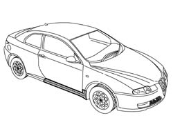
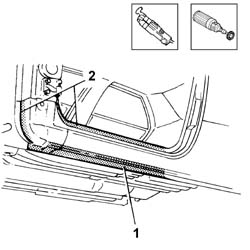
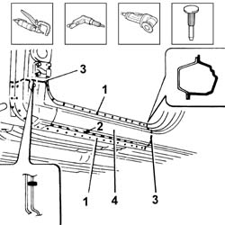
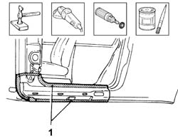
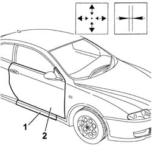
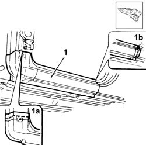
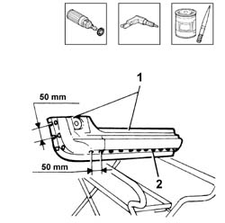
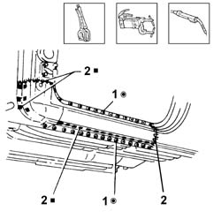
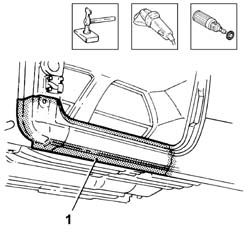
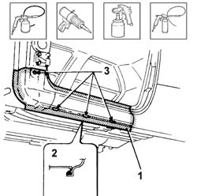

7210E44 R.R. UNDERDOOR SIDE MEMBER OUTER TRIM/
- Path
- Procedures > 72 PANELS AND FRAME > 7210 REMOVING REFITTING > 7210E EXTERNAL PARTS > 7210E44 R.R. UNDERDOOR SIDE MEMBER OUTER TRIM/
- Kind
- repair procedure (removal / refitting; the operation number is the code)
- Applies to
- all engines; all production periods
- Interactive page
- https://sloeber94.github.io/elrnDB-aGt/en/#/125002037
Applies to: all engines; all production periods
 Removing
Removing
 Refitting
RefittingCheck if any of the connected parts are deformed by checking body alignment dimensions. Use appropriate measurement tools (reference rigs, templates or gauges).
Straighten the body if necessary.

Applies to: all engines; all production periods
1. Remove the PVC treatment from the door sill to expose the weld spots using a vibrating cutter and appropriate blade.
2. Use a rotary brush to clean the panel edges to reveal the weld spots.

Applies to: all engines; all production periods
1. Use a chamfering machine to crop the weld spots indicated in the figure.
2. Use a drill fitted with an appropriate bit to drill out the weld spots in the areas shown in the figure.
Open the door sill fastenings.
3. Use a circular saw to follow the cutting lines shown in the enlargements and in the figure.
Use a chisel and hammer to remove spots ground previously.
4. Remove the door sill from the car.

Applies to: all engines; all production periods
1. Straighten the door sill compartment flaps using a mallet and profiled stake.
Use a grinding wheel to remove the weld spot residues.
Use a rotary brush to clean the treated areas.
Apply the electric weld paint finish.

Applies to: all engines; all production periods
Refitting
Removing1. Fit the part in its seat after thoroughly degreasing and secure using self-locking grippers.
2. Refit the front door.
Check alignment and ensure the surrounding gap is even, then remove the door.

Applies to: all engines; all production periods
1. Use a circular saw to lay part (1) over the front pillar (1a) and the door sill end section (1c).
Trim the cut edges and remove the part.

Applies to: all engines; all production periods
1. Use a rotary brush to remove the corrosion-proof treatment from around the inner and outer edges of the part.
2. Drill out equidistant holes along the lower and side edges of the part.
Apply electric weld paint finish to the eges in contact with the car.

Applies to: all engines; all production periods
Position the part on the car and secure using self-locking clips.
1. Use a spot welder to weld the areas shown in the figure.
2. Use a MIG welder to weld the ends and fill the holes made previously.

Applies to: all engines; all production periods
Correct any deformations in the panel using a profiled stake and mallet.
Crimp the reference tabs.
1. Use a grinding wheel to level the weld and remove.
Use a rotary brush to clean the newly-welded areas.

Applies to: all engines; all production periods
1. Apply rust-proofing to newly-welded areas.
2. Seal the joint lines between the part and the car.
Apply paint.
3. Apply wax oil inside the door sill.
